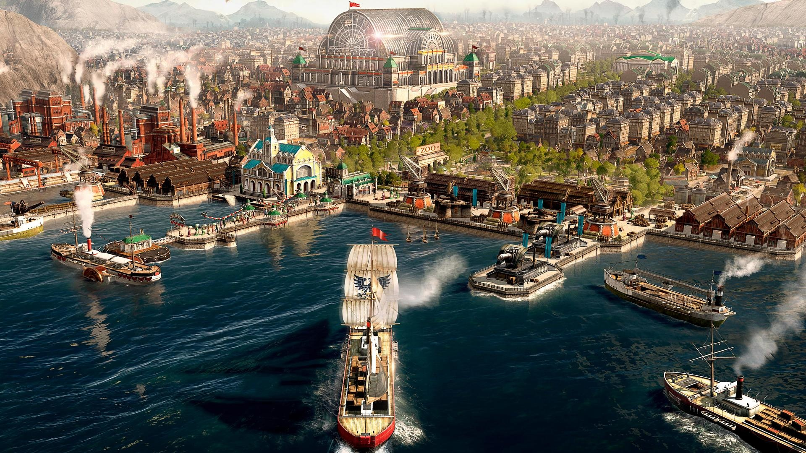
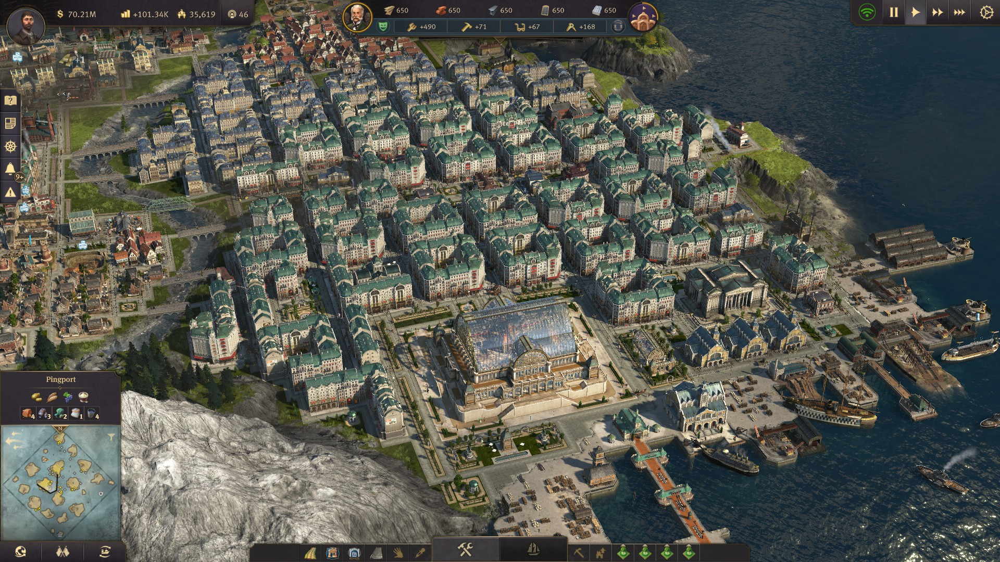
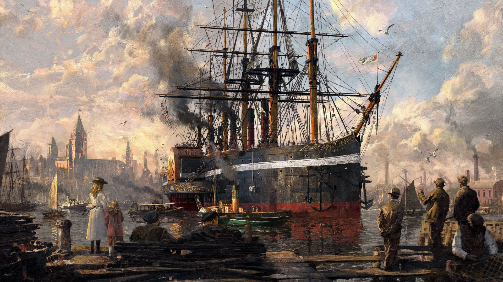
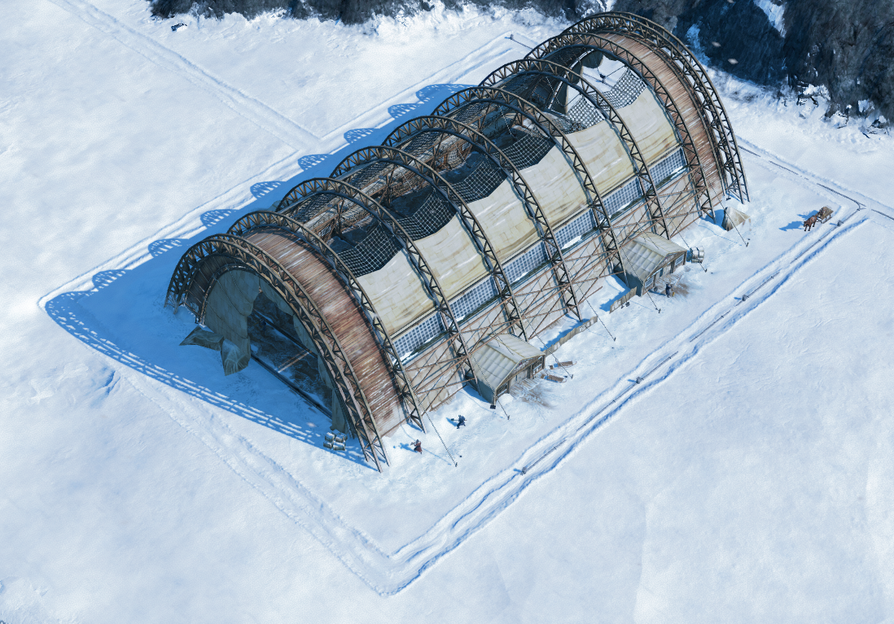

Home
Anno 1800 is a city-builder game developed by Ubisoft's Blue Byte studio and published by Ubisoft. It was released on 16 April 2019.Anno 1800 is the seventh installment of the Anno series Anno 1800 spans the 19th century at the dawn of the Industrial Age. The game features a story campaign, a sandbox mode, and multiplayer mode. Like Anno 2205, the game includes multi-session gameplay, though unlike its predecessor, combat and city-building sessions are not separated. Furthermore, randomly generated maps, AI opponents that build on the same map as the player, in addition to shippable trade goods and items make a return from the previous installments of the series.
Gallery




Game World
The Old World is the first playable region in Anno 1800, which is based on Europe in the 19th century. Every game starts in the Old World, which should be a place of residence for majority of your population. There you can create big European cities based on industrialisation and new technologies invented in the 19th century.As every region, the Old World consists of multiple handcrafted islands of varying sizes, fertilities and resources. Islands characteristics and arrangement depends on game settings chosen when creating the game.Besides yourself and other expanding players (either AI or human) some neutral traders and pirates can also be located in the Old World. Each of them settles a separate special island. Sir Archibald Blake is always present in the Old World while the presence of Madame Kahina, Eli Bleakworth and Anne Harlow is optional.
Production
Producing various goods is an essential part of Anno 1800 gameplay. Production supplies your empire with construction materials and consumables fulfilling your population’s needs. You can also trade with goods you produce to earn money or increase your reputation with other players. Production buildings are gathered into complex production chains which final products are usually the most valuable.Every production building produces goods at a certain production rate. The construction menu displays the time needed to produce 1 ton of the product, for every 1 ton of the product 1 ton of each input resource is also required. Based on the production time it is possible to figure out the perfect ratio of all buildings which form a production chain.Sufficient workforce is essential to keep production buildings operating, any lack of workforce will lower the production rate.You can alter working conditions to make your workers’ shifts longer or shorter thus increasing or decreasing the productivity. However, it also impacts the happiness of your population and the chance of incidents.
Resources
CoinsCredits.png is the currency of Anno 1800. They are required to construct almost all buildings and buy goods, ships and items. You can also use them to send gifts to computer players to increase your reputation or pay for various diplomatic agreements.They can be obtained by fulfilling needs of your population, trading with other human or computer players, selling ships to neutral traders, holding shares of other players' islands and completing quests from computer players. Occasionally you can also get a gift from other computer players.Your balance Balance.png reflects how many coins you gain or lose per minute. It includes income from residents, maintenance costs of buildings, upkeep costs of ships, shares value, tourists income and royal taxes.A lion share of a Player's regular income consists of fulfilling your population's needs. See the page on the Profitability of Consumer Goods for a summation of the most profitable options. .